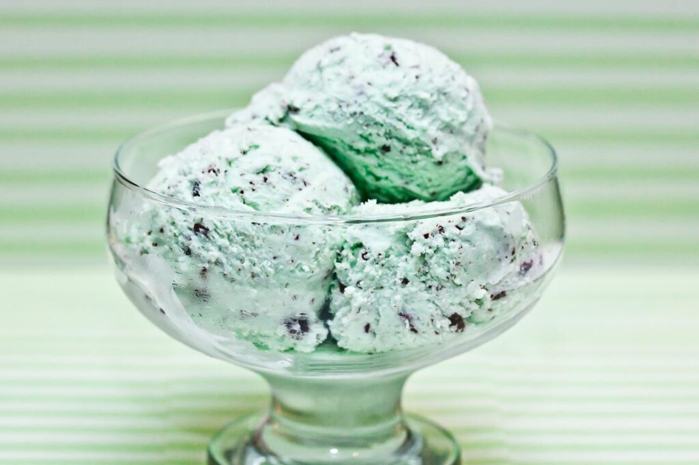
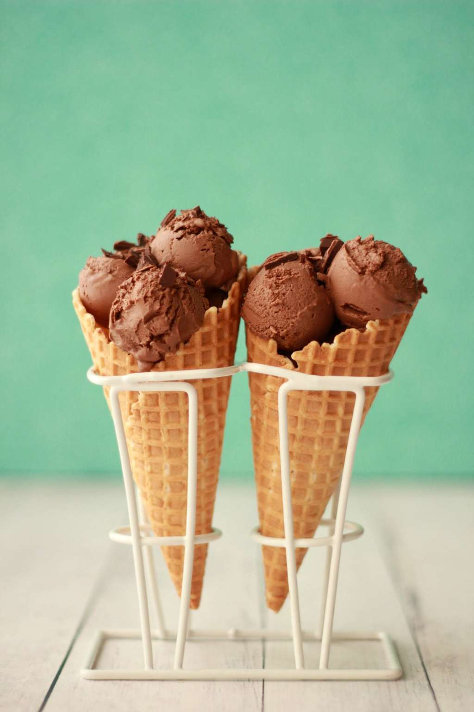
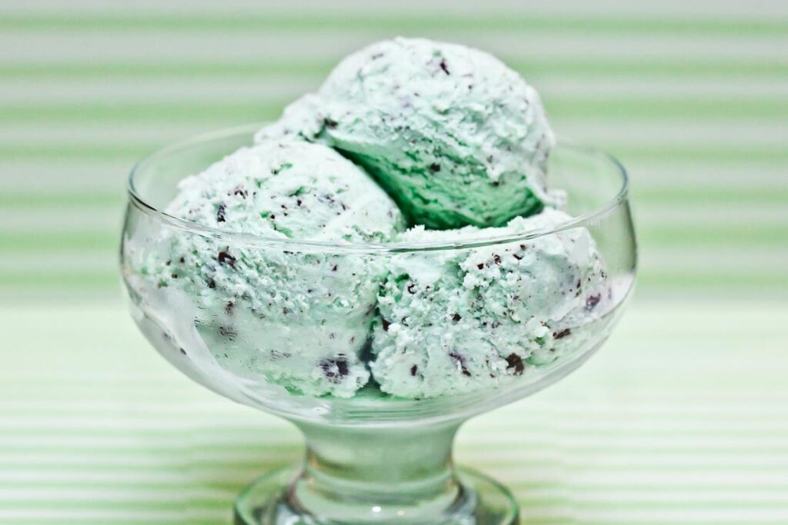
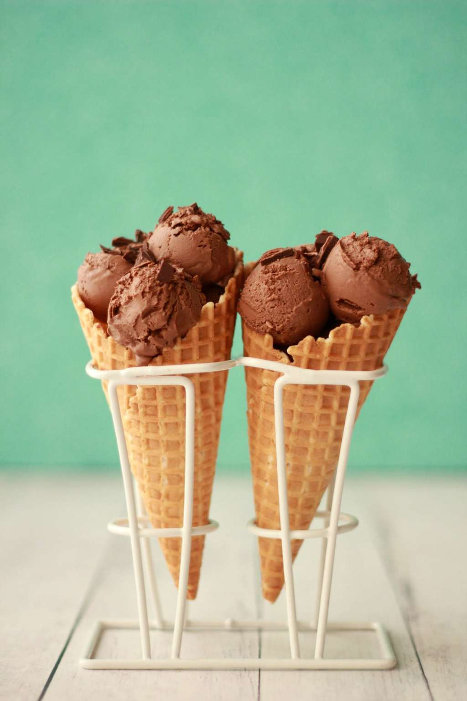

Not only does ice cream contain vitamins, it provides lots of energy. Ice cream is rich in carbohydrates, fats and proteins, which are all needed for our bodies to produce energy However, remember to eat in moderation, as too much of a good thing can also have undesired effects.
Fact 1: Contains Vitamins! Yes, just like the vitamins you take daily. Ice cream is actually a great source of calcium, vitamin D, riboflavin, vitamin A and phosphorus. Plus, some ice cream flavors have even more nutrients.
Vanilla beans have antioxidants as well as calcium, manganese, magnesium, potassium, zinc and iron, making our Original Moose Tracks a perfect treat full of vitamins.
Dark chocolate is also flooded with antioxidants and contains flavonoids to protect your heart, oleic acid to lower cholesterol levels and phytochemicals to fight off free radicals – so double up on that Moose Tracks Fudge
Fact 2: Ice cream helps stimulate the thrombopoietin, which is a hormone that helps reduce stress levels in the body, which is why you might find yourself reaching for a whole carton of Mint Moose Tracks after a stressful day at the office. Ice cream also contains L-tryptophan, which is a natural tranquilizer and helps in relaxing the nervous system.
Fact 3: You grew up being told that calcium is good for building strong bones and teeth. And that’s right; in fact, 99% of your bones are made up of calcium and ice cream is a great source of calcium.
 


